職業紹介
プリンス・プリンセス
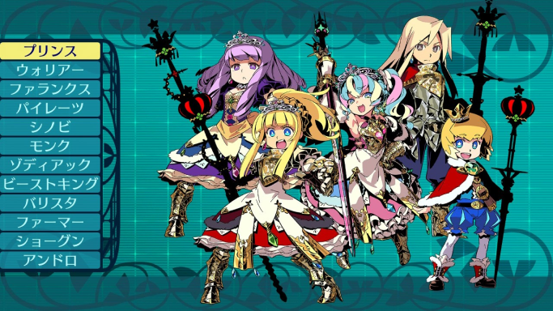
中衛：支援特化型
乱立する大小国家の王族の血を引く者たち。
その尊き血による指令は、パーティメンバーの士気を高め戦闘を有利に進めることができるという。
ウォリアー
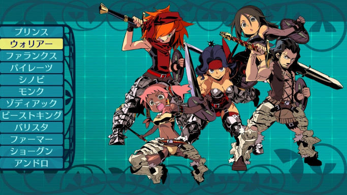
前衛：攻撃特化型
勇猛にして果敢、敵を倒すために存在する職業。
鍛え上げた肉体を誇示するように防具は好まず、巨大な剣や鈍器を用いて戦う武器のエキスパート。
ファランクス
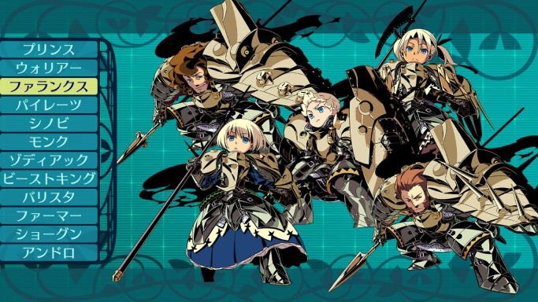
中衛：防御特化型
元は戦場で生まれたという職業。
全身を覆う金属鎧を着た彼らは圧倒的な防御力を誇る。
また槍を使う突撃も得意とし、攻防に秀でた職業である。
パイレーツ
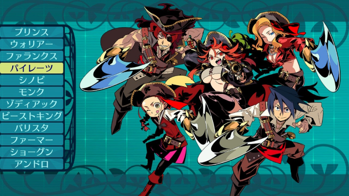
前衛：特殊追撃型
海上で育った海賊の末裔。
船の上という特殊な場所での戦闘方法を身に付けている。
一対一より味方の攻撃にあわせた追撃を得意としている。
シノビ
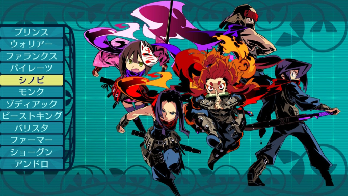
中衛：特殊攻撃型
遥か異国の地で修業を積んだ影の職業。
忍法という呼ばれる特殊なスキルを用いて迷宮探索を助ける。
達人級の者は一人で数人分の働きをすると伝えられている。
モンク
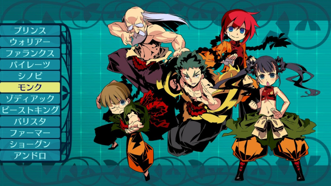
中衛：回復特化型
気と呼ばれる力を使い人体に働きかける力を持つ職業。
傷を癒すだけでなく素手による戦闘も得意とし熟練者の拳は武器を超えるという。
ゾディアック
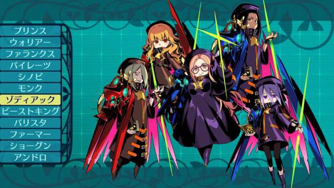
後衛：属性攻撃型
星々から天空に存在する元素エーテルを集め、
それを触媒に星術を発動させる化学術士。
単純な物理とは違う攻撃は、戦闘の大きな助けとなる。
ビーストキング
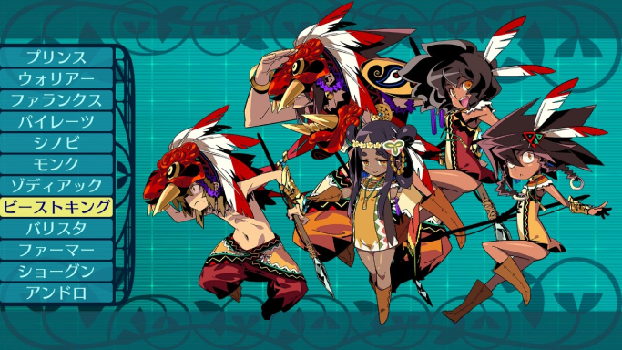
後衛：特殊召喚型
生きとし生ける全ての獣と意思を通じ合わせる獣たちの王。
空を飛ぶ鳥や地中のモグラまで操り、より高位のものは百獣の王をも自在に呼ぶ力を持っている。
バリスタ
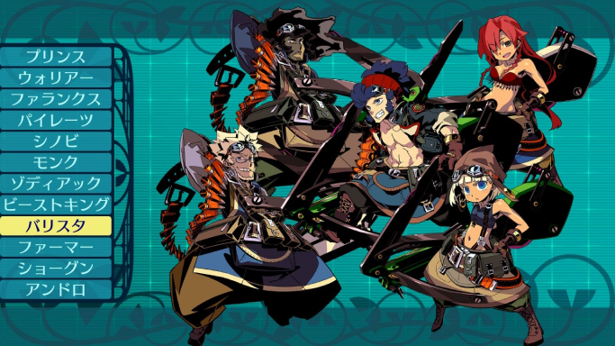
後衛：攻撃特化型
射手の異名を持つ飛び道具に達人。
己の身の丈ほどの巨大な弓や砲を担いで、
その強力な火力をもって戦闘を優位に進めることができる職業である。
ファーマー
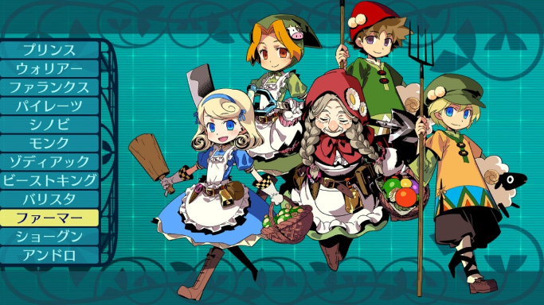
後衛・探索特化型
一攫千金を夢見て樹海に挑むことにした農民。
彼らの持つ能力は樹海探索に役立つものの、
戦力としては全く役にたたないので覚悟が必要である。
ショーグン
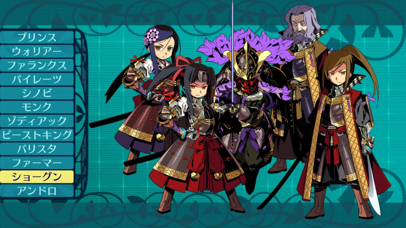
前衛：攻撃兼支援型
遥か東方の異国に存在する万余の軍勢を指揮する将。
周囲に様々な命を出し戦局を優位に進めるだけでなく、
二刀を用いた単独の戦闘力も最高クラスである。
アンドロ
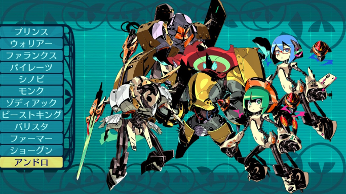
前衛・汎用攻撃型
世界樹と深王の手によって創られた対魔用人型兵器。
人間とは比較にならない力を有し、
単独での戦いにも、他との連動による戦いにも役立つ便利な兵器である。